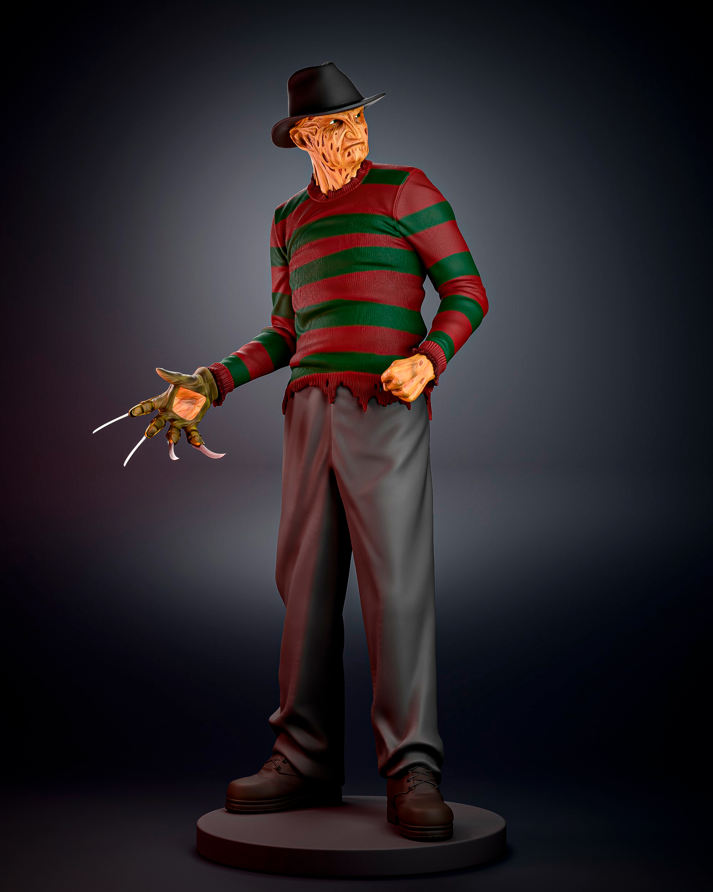
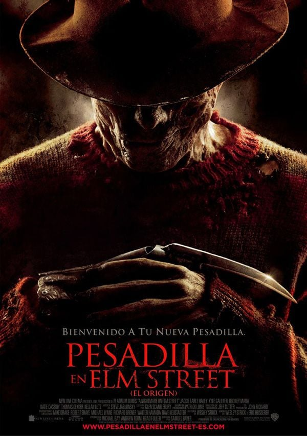

Freddy Krueger es uno de los personajes más conocidos del cine de terror. Es el principal villano de la película Pesadilla en la calle Elm, estrenada en el año 1984.
Se caracteriza por su rostro quemado, su sombrero oscuro, su suéter a rayas rojas y verdes y un guante con cuchillas en sus dedos. Su aspecto es inconfundible para los fanáticos del terror.

Freddy tiene la capacidad de aparecer en los sueños de sus víctimas. Allí puede perseguirlas y atacarlas, convirtiendo sus pesadillas en experiencias aterradoras.
La primera película de Freddy Krueger fue dirigida por Wes Craven y protagonizada por Robert Englund. Se convirtió en un clásico del cine de terror.

| Dato | Información |
|---|---|
| Nombre | Pesadilla en la calle Elm |
| Año | 1984 |
| Director | Wes Craven |
| Actor | Robert Englund |
| Género | Terror |
Estas son algunas de las películas en las que aparece Freddy Krueger:
Si querés conocer más sobre el personaje y su pasado, podés ingresar a nuestra segunda página.
Leer la historia de Freddy KruegerTambién podés consultar los siguientes sitios:
Información de la película en IMDb